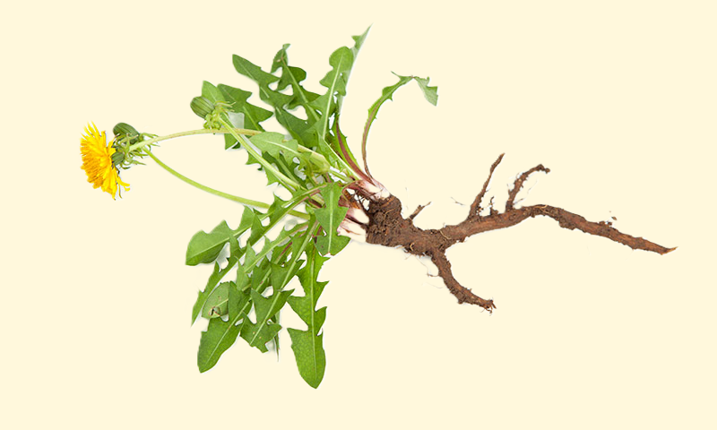
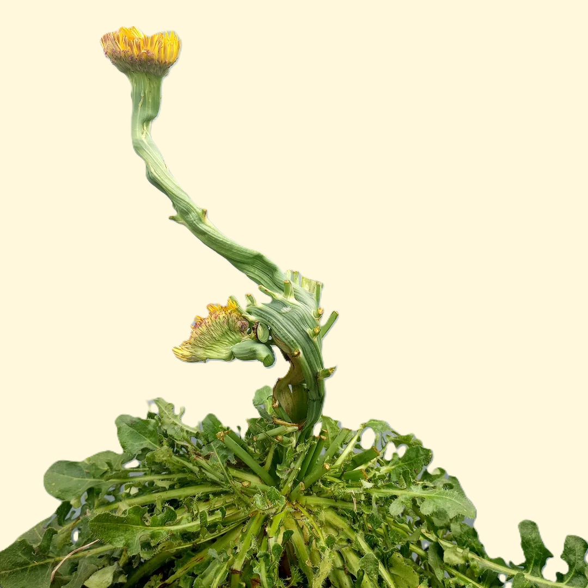
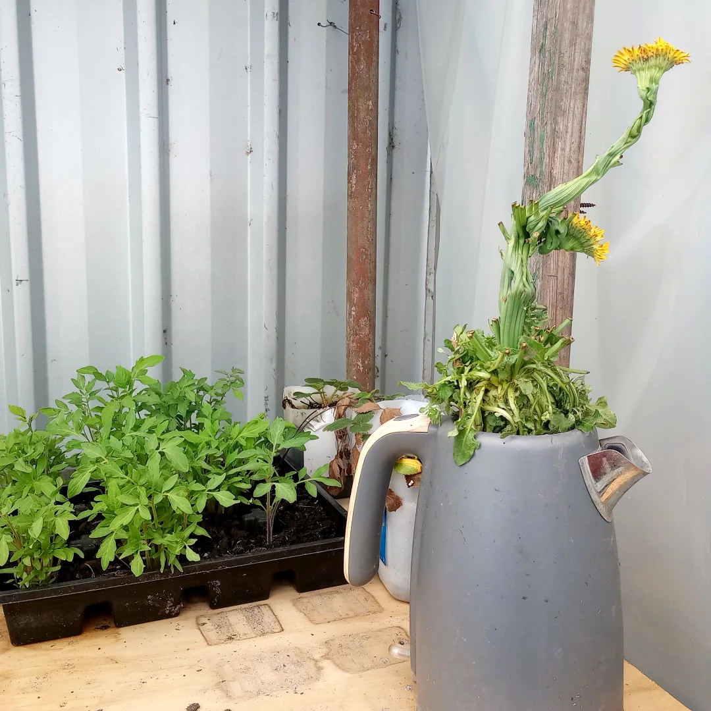

Firstly, uproot the entire localised taproot beneath a cluster of newly-budding dandelions completely whole. Put this root in its own well-watered pot of soil somewhere it will get adequate sunlight.

Extract from the ground the dandelion's taproot - the main, woody, shaft of the root system - as intact as can be managed, and replant this into its own pot.
Should the root survive this transplantation to a pot, once the specimen's stems start emerging - keep a close eye on them. When these stems start to get any higher than an inch or so above the soil, simply cut all but a single central one off the plant entirely before they start maturing.
Check and water the plant daily. Allow that one single stem to grow to its full height and blossom while continuing to prune off any other upstarts.
Only having one flower to look after and therefore a surplus of nutrients, the taproot will make its one surviving stem much thicker, and denser, and much more vascular.

A month-old common dandelion, all but one of its flowering stems trimmed back daily. Note the vascularity of the spared stem.
If you grow a bunch of these in separate pots over the course of a month or so, you can have a bouquet of unique, extra-thick, flowers. If nothing else, they make for a fun novelty - and I, for one, think it's certainly interesting to witness the adaptive process the dandelion here can be made to grow through.
If you were so inclined, I wonder if you could get comparable results by maintaining just one limb of a fruit-bearing plant. Or if anything of note were to happen if you grew an entire crop of extra-large dandelions with this method, then let them pollinate one another, bloom and go to seed, and repeated this whole process upon several subsequent generations of the plant.

A giant dandelion grown in an old teakettle.
last major update: September 2026